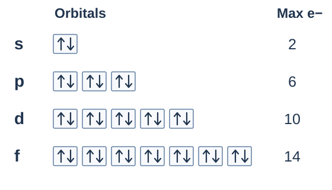
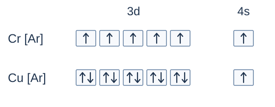

เรื่องนี้ต้องจำ: ระดับพลังงานหลัก–ย่อย ความจุออร์บิทัล หลัก Aufbau–Pauli–Hund ลำดับการเติม การเขียนเต็ม/ย่อ การนับชั้นหลัก ข้อยกเว้น Cr–Cu และการจัดเรียงของไอออน · ทวนและลองตอบทีละส่วน
1. ระดับพลังงานหลักกับระดับพลังงานย่อย
ระดับพลังงานหลัก (shell) แทนด้วย \(n=1,2,3,\ldots\) หรือ K, L, M, N ตามลำดับ ในชั้นหลักที่ \(n\) มีชั้นย่อยได้ \(n\) ชนิด มีออร์บิทัลรวม \(n^2\) ออร์บิทัล และจุอิเล็กตรอนสูงสุด \(2n^2\) ตัว
| ชั้นหลัก | ชั้นย่อยที่มีได้ | ออร์บิทัลรวม | e สูงสุด |
|---|---|---|---|
| 1 (K) | 1s | 1 | 2 |
| 2 (L) | 2s, 2p | 4 | 8 |
| 3 (M) | 3s, 3p, 3d | 9 | 18 |
| 4 (N) | 4s, 4p, 4d, 4f | 16 | 32 |
ชั้นย่อย (subshell) คือ s, p, d, f: เริ่มมีได้ตั้งแต่ \(n=1,2,3,4\) ตามลำดับ จึงมี 1s, 2p, 3d, 4f แต่ไม่มี 1p, 2d หรือ 3f
อย่าสับสน: \(2n^2\) เป็นความจุสูงสุด ไม่ใช่คำสั่งให้เติมชั้นหลักนั้นจนเต็มก่อนขึ้นชั้นถัดไป ชั้นที่ 3 จุได้ 18 แต่ K และ Ca มีการจัดแบบชั้นหลักเป็น 2,8,8,1 และ 2,8,8,2
คำถาม 1 — หลัก ย่อย และเลขยกกำลัง
ก. ชั้นหลัก \(n=3\) มีชั้นย่อยอะไรบ้าง มีออร์บิทัลรวมและอิเล็กตรอนสูงสุดเท่าใด?
ข. 2d มีได้หรือไม่ เพราะอะไร?
ค. สัญลักษณ์ 4p5 บอกชั้นหลัก ชนิดชั้นย่อย และจำนวนอิเล็กตรอนอย่างไร?
เฉลย: ก. 3s, 3p, 3d มี \(1+3+5=9\) ออร์บิทัล จุได้ \(2(3)^2=18\) อิเล็กตรอน
ข. ไม่มี 2d เพราะชั้นหลักที่ 2 มีได้เฉพาะ 2s และ 2p; d เริ่มที่ชั้นหลัก 3
ค. 4 คือชั้นหลัก \(n=4\), p คือชั้นย่อย และเลขยกกำลัง 5 คือจำนวนอิเล็กตรอนใน 4p ไม่ใช่จำนวนออร์บิทัล
2. ออร์บิทัลและความจุของ s, p, d, f
ออร์บิทัลใช้อธิบายการกระจายความน่าจะเป็นของอิเล็กตรอน หนึ่งออร์บิทัลจุได้สูงสุด 2 อิเล็กตรอนที่มีสปินตรงข้ามกัน กล่องหนึ่งใบแทนหนึ่งออร์บิทัล ลูกศรหนึ่งอันแทนอิเล็กตรอนหนึ่งตัว
| ชั้นย่อย | \(l\) | ออร์บิทัล | e สูงสุด |
|---|---|---|---|
| s | 0 | 1 | 2 |
| p | 1 | 3 | 6 |
| d | 2 | 5 | 10 |
| f | 3 | 7 | 14 |

s มีรูปทรงกลม ส่วน p มี 3 แนววางตัวและรูปร่างสองพูโดยทั่วไป ทั้งสามออร์บิทัลของ p ในอะตอมอิสระที่ไม่มีสนามภายนอกมีพลังงานเท่ากัน ไม่ใช่ออร์บิทัลเดียวที่จุ 6 อิเล็กตรอน
3. สามหลักที่ใช้เขียนแผนภาพออร์บิทัล
| หลัก | ใจความที่ใช้ทวน |
|---|---|
| Aufbau อาฟบาว | เขียนสถานะพื้นโดยเติมออร์บิทัลตามลำดับพลังงานที่เหมาะสม เริ่มจากต่ำก่อน; ต้องตรวจข้อยกเว้นจริงของธาตุด้วย |
| Pauli เพาลี | ออร์บิทัลเดียวมีได้ไม่เกิน 2 อิเล็กตรอน และถ้ามีสองตัวต้องมีสปินตรงข้ามกัน |
| Hund ฮุนด์ | ในกลุ่มออร์บิทัลที่พลังงานเท่ากัน สถานะพื้นจัดเดี่ยวด้วยสปินขนานให้ครบก่อน แล้วจึงจับคู่ |
คำถาม 2 — ลองวาดกล่องและลูกศร
ก. วาดการจัด 2p4 ในสถานะพื้น และนับอิเล็กตรอนเดี่ยว
ข. อิเล็กตรอนสองตัวในออร์บิทัลเดียวกันวาดเป็น ↑↑ ได้หรือไม่ ผิดหลักใด?
เฉลย: ก. วาดเป็น [↑↓] [↑] [↑] จึงมีอิเล็กตรอนเดี่ยว 2 ตัว จะเลือกกล่องใดจับคู่ก่อนก็ได้ถ้าพลังงานเท่ากัน
ข. ไม่ได้ เพราะขัดหลัก Pauli อิเล็กตรอนสองตัวในออร์บิทัลเดียวกันต้องมีสปินตรงข้ามกันเป็น ↑↓
4. อ่านลำดับจากลูกศรทแยง
วาดแล้วไล่ตามลูกศร: เขียนชั้นย่อยเป็นแถวตาม n แล้วอ่านลูกศรเส้นที่ 1 → 8 แต่ละเส้นเริ่มจากขวาบนลงซ้ายล่าง เมื่อสุดเส้นจึงไปเริ่มเส้นถัดไป

ตรวจลำดับที่อ่านได้: 1s → 2s → 2p → 3s → 3p → 4s → 3d → 4p → 5s → 4d → 5p → 6s → 4f → 5d → 6p → 7s → 5f → 6d → 7p
สำหรับอะตอมหลายอิเล็กตรอน โดยทั่วไปชั้นย่อยในชั้นหลักเดียวกันเรียงพลังงาน s < p < d < f ส่วน H และระบบหนึ่งอิเล็กตรอนในแบบจำลองอย่างง่ายมีพลังงานขึ้นกับ \(n\) เป็นหลัก
แผนผังนี้เป็นตัวช่วยเขียนสถานะพื้นของอะตอมส่วนใหญ่ ไม่ใช่ลำดับพลังงานตายตัวสำหรับทุกอะตอมหรือไอออน จึงต้องใช้ข้อยกเว้น Cr–Cu และวิธีเขียนไอออนร่วมด้วย
คำถาม 3 — ฝึกไล่ลูกศร
ก. ใช้แผนผังเรียง 4p, 3d, 5s, 4s, 4d จากที่เติมก่อนมาเติมหลัง
ข. ลูกศรเส้นที่เริ่มจาก 3d ผ่านชั้นย่อยใดต่อไปอีกบ้าง?
เฉลย: ก. 4s → 3d → 4p → 5s → 4d
ข. เส้นที่ 5 อ่านเป็น 3d → 4p → 5s โดยไล่จากขวาบนลงซ้ายล่าง แล้วจึงไปเริ่มเส้นถัดไปที่ 4d
เสริม: ใช้กฎ n+l ตรวจลำดับ
ให้ s, p, d, f มี \(l=0,1,2,3\) เติมค่า \(n+l\) ต่ำก่อน; ถ้าผลรวมเท่ากันให้ \(n\) ต่ำก่อน เช่น 3d กับ 4p มีผลรวม 5 เท่ากัน จึงให้ 3d มาก่อน 4p
5. เขียนเต็ม เขียนย่อ และรวมกลับเป็นชั้นหลัก
วิธีทำ: นับจำนวนอิเล็กตรอน → เติมตามหลัก → รวมเลขยกกำลังตรวจยอด → ถ้าต้องการชั้นหลัก ให้รวมอิเล็กตรอนที่มี \(n\) เดียวกัน
| อะตอม | แบบเต็ม | แบบย่อ | ชั้นหลัก |
|---|---|---|---|
| Na, Z=11 | 1s2 2s2 2p6 3s1 | [Ne] 3s1 | 2,8,1 |
| Cl, Z=17 | 1s2 2s2 2p6 3s2 3p5 | [Ne] 3s2 3p5 | 2,8,7 |
| Ca, Z=20 | 1s2 2s2 2p6 3s2 3p6 4s2 | [Ar] 4s2 | 2,8,8,2 |
สัญลักษณ์แก๊สมีตระกูลแทนแกนอิเล็กตรอนที่เต็มแล้ว: [He] = 2, [Ne] = 10, [Ar] = 18, [Kr] = 36, [Xe] = 54, [Rn] = 86 ตัว เลือกแกนที่ตรงกับส่วนต้นของการจัดเรียง
ตัวอย่าง Fe: [Ar] 3d6 4s2 รวมชั้นหลักได้ 2,8,14,2 เพราะ 3s, 3p และ 3d อยู่ในชั้นหลัก 3 เหมือนกัน การเขียน [Ar] 4s2 3d6 บอกจำนวนในแต่ละชั้นย่อยแบบเดียวกัน
เชื่อมตารางธาตุสำหรับธาตุหมู่หลักในสถานะพื้น: คาบดูจาก n สูงสุดที่มีอิเล็กตรอน สำหรับธาตุหมู่หลัก เวเลนซ์อิเล็กตรอนคืออิเล็กตรอนในชั้น n สูงสุด: ns1 → หมู่ 1, ns2 → หมู่ 2, ns2np1–6 → หมู่ 13–18; He เป็นข้อยกเว้น มี 1s2 แต่เป็นหมู่ 18
อย่าใช้จำนวนอิเล็กตรอนชั้นนอกสุดเพียงอย่างเดียวระบุหมู่ของธาตุแทรนซิชัน เพราะอิเล็กตรอน d อาจร่วมเกี่ยวข้องด้วย
คำถาม 4 — เขียนให้ครบสามแบบ
ให้ S มี Z=16 และ K มี Z=19 จงเขียนแบบเต็ม แบบย่อ และแบบชั้นหลัก พร้อมระบุคาบ หมู่หลัก และจำนวนเวเลนซ์อิเล็กตรอนของอะตอมทั้งสอง
เฉลย S: 1s2 2s2 2p6 3s2 3p4 = [Ne] 3s2 3p4; ชั้นหลัก 2,8,6 → คาบ 3 หมู่ 16 (VIA) เวเลนซ์ 6
เฉลย K: 1s2 2s2 2p6 3s2 3p6 4s1 = [Ar] 4s1; ชั้นหลัก 2,8,8,1 → คาบ 4 หมู่ 1 (IA) เวเลนซ์ 1
6. ข้อยกเว้นที่ควรจำ: Cr และ Cu
| อะตอม | สถานะพื้นที่ต้องจำ | ชั้นหลัก |
|---|---|---|
| Cr, Z=24 | [Ar] 3d5 4s1 | 2,8,13,1 |
| Cu, Z=29 | [Ar] 3d10 4s1 | 2,8,18,1 |

พลังงาน 3d กับ 4s ใกล้กัน การจัดแบบนี้ให้พลังงานรวมต่ำกว่าการทำนายอย่างง่าย จึงมักใช้ “d ครึ่งเต็ม/เต็ม” เป็นตัวช่วยจำ อย่าใช้กฎเลื่อนอิเล็กตรอนเพื่อทำให้ครึ่งเต็มกับทุกธาตุ
คำถาม 5 — ตรวจข้อยกเว้น
แก้การจัด Cr: [Ar] 3d4 4s2 และ Cu: [Ar] 3d9 4s2 ให้เป็นสถานะพื้นจริง แล้วนับจำนวนอิเล็กตรอนเดี่ยวของแต่ละอะตอม
เฉลย: Cr เป็น [Ar] 3d5 4s1 มีเดี่ยว 5+1=6 ตัว ส่วน Cu เป็น [Ar] 3d10 4s1 มีเดี่ยว 0+1=1 ตัว
7. การจัดเรียงของไอออน
ให้ \(q\) เป็นเลขประจุพร้อมเครื่องหมาย: จำนวนอิเล็กตรอน \(N_e=Z-q\) ไอออนบวกเสียอิเล็กตรอน ไอออนลบรับอิเล็กตรอน จำนวนโปรตอนยังคงเดิม
ทำเป็นลำดับ: เขียนอะตอมเป็นกลางที่ถูกต้องก่อน → รับ/เสียตามประจุ → รวมเลขยกกำลังตรวจยอดอีกครั้ง สำหรับการสร้างแคตไอออนของธาตุ 3d ที่เรียนนี้ เอา 4s ออกก่อน 3d แม้แบบแผนการเติมจะเริ่ม 4s ก่อนก็ตาม
| ไอออน | การจัดเรียง | สิ่งที่เปลี่ยน |
|---|---|---|
| Na+, Mg2+ | [Ne] | เสียอิเล็กตรอนจาก 3s |
| O2− | [Ne] | รับเพิ่มใน 2p จนเต็ม |
| Cl− | [Ar] | รับเพิ่มใน 3p จนเต็ม |
| Fe2+ | [Ar] 3d6 | ออกจาก 4s ก่อน 2 ตัว |
| Fe3+ | [Ar] 3d5 | ออกจาก 4s 2 ตัว แล้ว 3d อีก 1 |
| Cu+ | [Ar] 3d10 | ออกจาก 4s 1 ตัว |
| Cu2+ | [Ar] 3d9 | ออกจาก 4s 1 ตัว แล้ว 3d อีก 1 |
คำถาม 6 — ไอออนของ Fe และ Cu
ให้ Fe มี Z=26 และ Cu มี Z=29 เติมจำนวนอิเล็กตรอน การจัดเรียงแบบย่อ และอิเล็กตรอนเดี่ยวของไอออนอิสระทั้งสี่ พร้อมระบุว่าชั้นย่อยใดเสียอิเล็กตรอนก่อน
| ไอออน | e ทั้งหมด | แบบย่อ | e เดี่ยว |
|---|---|---|---|
| Fe2+ | ______ | ____________ | ______ |
| Fe3+ | ______ | ____________ | ______ |
| Cu+ | ______ | ____________ | ______ |
| Cu2+ | ______ | ____________ | ______ |
เฉลย: เอา 4s ออกก่อน 3d สำหรับไอออนเหล่านี้
| ไอออน | e ทั้งหมด | แบบย่อ | e เดี่ยว |
|---|---|---|---|
| Fe2+ | 24 | [Ar] 3d6 | 4 |
| Fe3+ | 23 | [Ar] 3d5 | 5 |
| Cu+ | 28 | [Ar] 3d10 | 0 |
| Cu2+ | 27 | [Ar] 3d9 | 1 |
8. ไอโซอิเล็กทรอนิกส์ และการแยกสถานะพื้น–กระตุ้น
ตัวอย่างอนุภาคที่มีการจัดเรียงเหมือนกัน: O2−, F−, Ne, Na+, Mg2+, Al3+ มี 10 อิเล็กตรอน และจัดเป็น 1s2 2s2 2p6 เหมือนกัน จึงเป็นชุดไอโซอิเล็กทรอนิกส์ แต่ยังเป็นคนละธาตุเพราะจำนวนโปรตอนต่างกัน
คำถาม 7 — จำนวนเท่ากัน แต่ธาตุเดียวกันหรือไม่
ให้ O: Z=8, Na: Z=11 และ Al: Z=13 จงหา Ne และการจัดเรียงของ O2−, Na+, Al3+ แล้วอธิบายว่าทั้งสามกลายเป็นธาตุนีออนหรือไม่
เฉลย: 8+2=10, 11−1=10 และ 13−3=10 อิเล็กตรอน ตามลำดับ ทุกชนิดจัดเป็น [Ne] = 1s2 2s2 2p6 แต่ไม่ได้กลายเป็นนีออน เพราะโปรตอนยังเป็น 8, 11 และ 13 ไม่ใช่ 10
สถานะพื้น มีพลังงานต่ำสุด ส่วนสถานะกระตุ้น มีอิเล็กตรอนอยู่ในออร์บิทัลพลังงานสูงขึ้น การไม่ตรงลำดับ Aufbau สำหรับสถานะพื้นไม่ได้แปลว่าเป็นไปไม่ได้เสมอไป แต่การขัด Pauli เป็นการจัดที่ไม่อนุญาต
คำถาม 8 — ตัดสินพร้อมเหตุผล
อะตอม C มี Z=6 พิจารณา ก. 1s2 2s2 2p2 โดยอิเล็กตรอน 2p อยู่เดี่ยวคนละกล่อง ข. 1s2 2s1 2p3 โดยอิเล็กตรอน 2p อยู่เดี่ยวครบสามกล่อง และ ค. 1s3 2s1 2p2 จงระบุสถานะพื้น สถานะกระตุ้น หรือการจัดที่เป็นไปไม่ได้
เฉลย: ก. สถานะพื้น: เติม 2s ก่อนและจัด 2p ตาม Hund
ข. เป็นการจัดสถานะกระตุ้น: ย้ายอิเล็กตรอนจาก 2s ไป 2p จำนวนนับรวมยังเป็น 6 และไม่ขัด Pauli
ค. เป็นไปไม่ได้ เพราะ 1s เป็นหนึ่งออร์บิทัล มีเกิน 2 อิเล็กตรอน ขัด Pauli แม้ยอดรวมจะเป็น 6
แหล่งศึกษาต่อและตรวจสอบ
IPST / สสวท.: จำนวนอิเล็กตรอน / Shell capacities · ชั้นหลัก–ย่อย / Shells and subshells · ออร์บิทัล / Orbitals · หลักการจัดเรียง / Filling principles
IPST eBook · OpenStax: configurations and ions · NIST: Cr, Cu
สรุป คำถาม และภาพเรียบเรียงใหม่ อิงขอบเขต สสวท. ตรวจข้อยกเว้นกับ NIST และการจัดเรียงไอออนกับ OpenStax
What to remember: shells and subshells, orbital capacities, Aufbau–Pauli–Hund, filling order, full/shorthand configurations, shell totals, Cr–Cu exceptions, and ions. Review and answer one section at a time.
1. Principal shells and subshells
A principal shell is labelled \(n=1,2,3,\ldots\), also called K, L, M, N. Shell \(n\) contains \(n\) subshell types, \(n^2\) orbitals in total, and at most \(2n^2\) electrons.
| Shell | Allowed subshells | Total orbitals | Max e |
|---|---|---|---|
| 1 (K) | 1s | 1 | 2 |
| 2 (L) | 2s, 2p | 4 | 8 |
| 3 (M) | 3s, 3p, 3d | 9 | 18 |
| 4 (N) | 4s, 4p, 4d, 4f | 16 | 32 |
The s, p, d and f subshells first occur at \(n=1,2,3,4\), respectively. Thus 1s, 2p, 3d and 4f exist, but 1p, 2d and 3f do not.
Do not confuse capacity with order: \(2n^2\) is a maximum, not an instruction to fill that shell completely first. Shell 3 can hold 18 electrons, although K and Ca have shell totals 2,8,8,1 and 2,8,8,2.
Question 1 — Decode shells, subshells and superscripts
a. List the subshells for \(n=3\), total orbitals and maximum electrons.
b. Can 2d exist? Explain.
c. What do 4, p and 5 mean in 4p5?
Answer: a. 3s, 3p, 3d: \(1+3+5=9\) orbitals and at most \(2(3)^2=18\) electrons.
b. No. Shell 2 contains only 2s and 2p; d first occurs in shell 3.
c. 4 gives the principal shell, p the subshell type, and 5 the number of electrons in 4p, not the number of orbitals.
2. Orbitals and the capacities of s, p, d and f
An orbital describes an electron probability distribution. One orbital holds at most two electrons, with opposite spins. Each box represents one orbital; each arrow represents one electron.
| Subshell | \(l\) | Orbitals | Max e |
|---|---|---|---|
| s | 0 | 1 | 2 |
| p | 1 | 3 | 6 |
| d | 2 | 5 | 10 |
| f | 3 | 7 | 14 |
s orbitals are spherical. The three p orbitals have different orientations and generally two-lobed shapes. In a free atom without an external field, the three orbitals in one p subshell have equal energy. They are not one orbital holding six electrons.
3. Three principles for orbital diagrams
| Principle | Remember |
|---|---|
| Aufbau | Build a ground-state configuration using the appropriate lowest available orbital energies first. Check known exceptions. |
| Pauli | At most two electrons occupy one orbital, and their spins must be opposite. |
| Hund | For a ground state, occupy equal-energy orbitals singly with parallel spins before pairing. |
Question 2 — Draw boxes and arrows
a. Draw the ground-state orbital diagram for 2p4 and count unpaired electrons.
b. Can two electrons in one orbital be drawn as ↑↑? Name the principle.
Answer: a. [↑↓] [↑] [↑], giving two unpaired electrons. Any one of the equal-energy boxes may contain the pair.
b. No. Pauli requires opposite spins, ↑↓, for two electrons in one orbital.
4. Follow the diagonal arrows
Draw, then follow: write subshells in rows by n. Read arrows 1 → 8, following each from upper right to lower left. Finish one arrow before starting the next.
Check the order you read: 1s → 2s → 2p → 3s → 3p → 4s → 3d → 4p → 5s → 4d → 5p → 6s → 4f → 5d → 6p → 7s → 5f → 6d → 7p
For many-electron atoms, subshell energies within a shell generally increase as s < p < d < f. For H and other one-electron systems in the simple model, energy depends principally on \(n\).
The diagram is a guide for most atomic ground states, not a fixed energy order for every atom or ion. Use it together with the Cr–Cu exceptions and the rules for ions.
Question 3 — Practise reading the arrows
a. Use the diagram to place 4p, 3d, 5s, 4s and 4d in their usual filling order.
b. Which subshells follow 3d on the same diagonal arrow?
Answer: a. 4s → 3d → 4p → 5s → 4d.
b. Arrow 5 reads 3d → 4p → 5s from upper right to lower left. The next arrow begins at 4d.
Extra: check with the n+l rule
s, p, d and f have \(l=0,1,2,3\). Fill the smaller \(n+l\) first; if tied, use the smaller \(n\). For example, 3d and 4p both have a sum of 5, so 3d comes first.
5. Full notation, shorthand and shell totals
Method: count electrons → fill using the principles → sum superscripts to check → add occupancies with equal \(n\) when shell totals are needed.
| Atom | Full configuration | Shorthand | Shell totals |
|---|---|---|---|
| Na, Z=11 | 1s2 2s2 2p6 3s1 | [Ne] 3s1 | 2,8,1 |
| Cl, Z=17 | 1s2 2s2 2p6 3s2 3p5 | [Ne] 3s2 3p5 | 2,8,7 |
| Ca, Z=20 | 1s2 2s2 2p6 3s2 3p6 4s2 | [Ar] 4s2 | 2,8,8,2 |
Noble-gas symbols represent closed cores: [He] = 2, [Ne] = 10, [Ar] = 18, [Kr] = 36, [Xe] = 54 and [Rn] = 86 electrons. Use a core that matches the beginning of the configuration.
Fe example: [Ar] 3d6 4s2 gives shell totals 2,8,14,2 because 3s, 3p and 3d all belong to shell 3. Writing [Ar] 4s2 3d6 states the same subshell occupancies.
Periodic-table connection for main-group ground-state atoms: the highest occupied n gives the period. For main-group elements, valence electrons occupy that outermost shell: ns1 → group 1; ns2 → group 2; ns2np1–6 → groups 13–18. He is an exception: 1s2 belongs to group 18.
Do not assign a transition-metal group from outermost-shell electron count alone; d electrons can also be involved.
Question 4 — Write all three forms
Given S: Z=16 and K: Z=19, write full configurations, noble-gas shorthand and shell totals. State the period, main group and number of valence electrons for each atom.
S: 1s2 2s2 2p6 3s2 3p4 = [Ne] 3s2 3p4; 2,8,6 → period 3, group 16 (VIA), six valence electrons.
K: 1s2 2s2 2p6 3s2 3p6 4s1 = [Ar] 4s1; 2,8,8,1 → period 4, group 1 (IA), one valence electron.
6. Remember the Cr and Cu exceptions
| Atom | Actual ground state | Shell totals |
|---|---|---|
| Cr, Z=24 | [Ar] 3d5 4s1 | 2,8,13,1 |
| Cu, Z=29 | [Ar] 3d10 4s1 | 2,8,18,1 |
The 3d and 4s energies are close. These observed arrangements have lower total energy than the simplest prediction. “Half-filled/filled d” is a memory aid; do not apply an automatic promotion rule to every element.
Question 5 — Correct the exceptions
Correct Cr: [Ar] 3d4 4s2 and Cu: [Ar] 3d9 4s2 to their actual ground states. Count unpaired electrons in each atom.
Answer: Cr is [Ar] 3d5 4s1 with 5+1=6 unpaired electrons. Cu is [Ar] 3d10 4s1 with 0+1=1.
7. Electron configurations of ions
Let \(q\) be the signed charge number: \(N_e=Z-q\). Cations lose electrons; anions gain electrons. Proton number stays unchanged.
Method: start from the correct neutral atom → add/remove the required electrons → check the superscript total. For the 3d-metal cations covered here, remove 4s electrons before 3d electrons, even though the usual filling pattern starts with 4s.
| Ion | Configuration | Change |
|---|---|---|
| Na+, Mg2+ | [Ne] | Remove 3s electrons |
| O2− | [Ne] | Fill 2p |
| Cl− | [Ar] | Fill 3p |
| Fe2+ | [Ar] 3d6 | Remove two 4s electrons |
| Fe3+ | [Ar] 3d5 | Remove 4s², then one 3d electron |
| Cu+ | [Ar] 3d10 | Remove the 4s electron |
| Cu2+ | [Ar] 3d9 | Remove 4s¹, then one 3d electron |
Question 6 — Fe and Cu ions
Given Fe: Z=26 and Cu: Z=29, complete electron totals, shorthand configurations and unpaired-electron counts for the free ions. State which subshell loses electrons first.
| Ion | Total e | Shorthand | Unpaired e |
|---|---|---|---|
| Fe2+ | ______ | ____________ | ______ |
| Fe3+ | ______ | ____________ | ______ |
| Cu+ | ______ | ____________ | ______ |
| Cu2+ | ______ | ____________ | ______ |
Answer: remove 4s before 3d for these cations.
| Ion | Total e | Shorthand | Unpaired e |
|---|---|---|---|
| Fe2+ | 24 | [Ar] 3d6 | 4 |
| Fe3+ | 23 | [Ar] 3d5 | 5 |
| Cu+ | 28 | [Ar] 3d10 | 0 |
| Cu2+ | 27 | [Ar] 3d9 | 1 |
8. Isoelectronic species, ground states and excited states
An isoelectronic example: O2−, F−, Ne, Na+, Mg2+ and Al3+ each have ten electrons and the configuration 1s2 2s2 2p6. They remain different elements because they have different proton numbers.
Question 7 — Same electrons, same element?
Given O: Z=8, Na: Z=11 and Al: Z=13, find the electron numbers and configurations of O2−, Na+ and Al3+. Have they become neon?
Answer: 8+2=10, 11−1=10 and 13−3=10 electrons. All have [Ne] = 1s2 2s2 2p6. None has become neon: their proton numbers remain 8, 11 and 13 rather than 10.
A ground state has the lowest energy; an excited state has an electron in a higher-energy orbital. Departing from ground-state Aufbau filling does not always make an arrangement impossible. Violating Pauli does.
Question 8 — Classify and explain
For C, Z=6, consider a. 1s2 2s2 2p2 with the two p electrons in separate boxes; b. 1s2 2s1 2p3 with one electron in each p orbital; c. 1s3 2s1 2p2. Identify a ground state, an excited-state configuration and an impossible arrangement.
Answer: a. Ground state: 2s fills first and 2p follows Hund.
b. Excited-state configuration: an electron has been promoted from 2s to 2p. There are still six electrons, without violating Pauli.
c. Impossible: 1s is one orbital and cannot hold three electrons, even though the total is six.
Sources and further study
IPST / สสวท.: จำนวนอิเล็กตรอน / Shell capacities · ชั้นหลัก–ย่อย / Shells and subshells · ออร์บิทัล / Orbitals · หลักการจัดเรียง / Filling principles
IPST eBook · OpenStax: configurations and ions · NIST: Cr, Cu
Original summary, questions and diagrams, aligned with IPST topics; exceptions checked against NIST and ionic configurations against OpenStax.